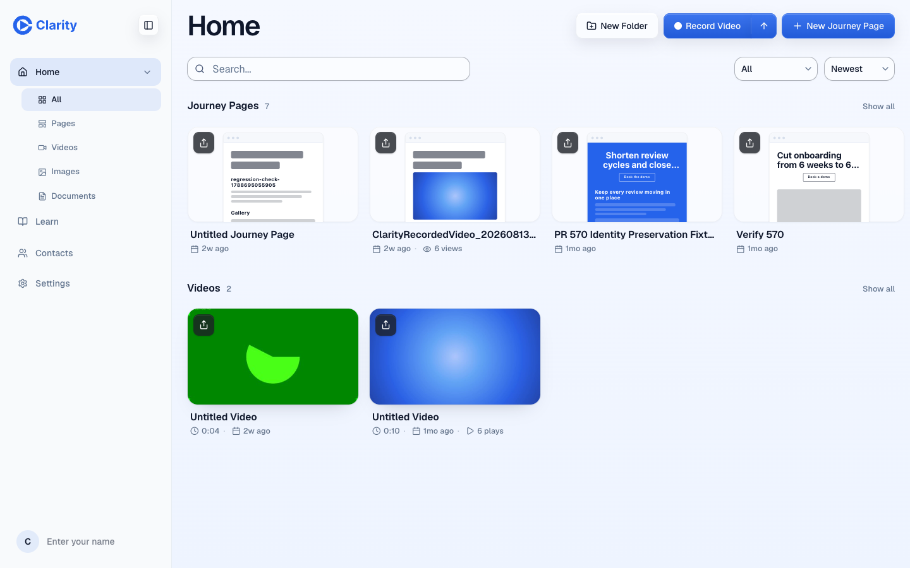
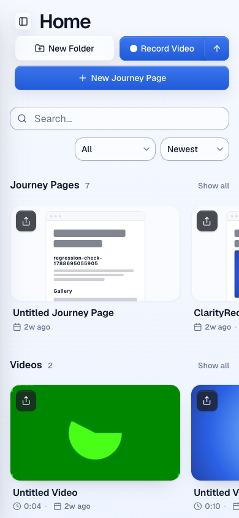

https://pr-646.clarity-video.workers.dev/home at commit 200d21dd on current main, test account. Mini page previews cropped at the card edge, plays and views on the bottom row. PDF first-page previews are split out to the frost-cards-pdf-previews branch.

